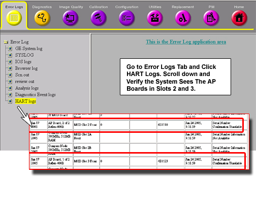
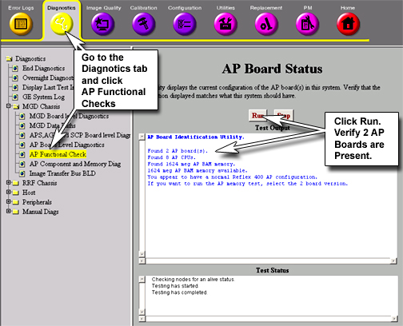
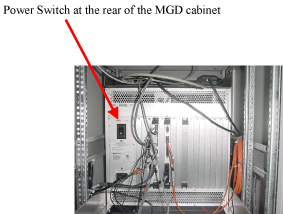
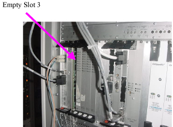
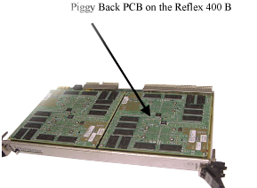
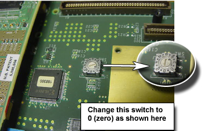

Operating Documentation
Direction 5133315-3, Rev# 14
Signa EXCITE HD 1.5T Service Methods
Module Version 1.0, Version Date 5/3/07
Operating Documentation |
| Required Persons | Preliminary Reqs | Procedure | Finalization |
|---|---|---|---|
| 1 | Not Applicable | 30 mins | Not Applicable |
A system using two Reflex 400B boards can be configured to run on one board in the case of a defective board or for general troubleshooting purposes. The Reflex 400B PCB in slot 2 (Master) has a switch setting of “0” and the switch setting in slot 3 (Slave) has a setting of “ 3”. The Master Reflex 400B PCB must be functional in order for the system to scan. If the Slave, i.e. the PCB in Slot 3 goes defective, the machine may still be functional. This process explains how to setup a 400B PCB to run as a master in slot 2 of the MGD Chassis.
| Last Update | 01/24/2005 |
| Item | Qty | Effectivity | Part# | Manufacturer | |
|---|---|---|---|---|---|
| Phillips Screw Driver | 1 | - | - | - | |
| Flat Blade Screw Driver | 1 | - | - | - | |
| ||||
| Be sure to remove power from the MGD Chassis before removing any modules to avoid damage to the circuits. | ||||
Check that the AP boards are recognized by the system by checking for their presents in the HART logs. Check the system via the service browser. (Go to Service browser – Error log – HART Tools – HART logs and see that both the pcbs are recognized by the system). See Illustration 1.
Illustration 1: Verifying The System Can See The AP Boards In HART

We can also verify the system can see the AP boards from MGD Diagnostics. See Illustration 2.
Illustration 2: Confirming That The Two PCBs Are Present

Note that both PCBs in the MGD slot 2 and 3 are present. (The “Slave” PCB, in spite of being defective, may be recognized by the system)
Stop all scans in the system.
Switch off the Power at the rear of the cabinet shown in Illustration 2.
Illustration 3: MGD Chassis Power Switch At The Rear Of The Chassis

Remove the PCB in slot 2 – This is the defective one
Remove PCB from Slot 3 as shown in Illustration 4.
Illustration 4: Slot 3 of MGD Chassis

Remove the piggyback PCB from the main PCB as shown in Illustration 5 by removing the five Philips head screws.
Illustration 5: Piggy Back PCB on the Reflex 400 B

Change the address switch setting from “3” to “0” as shown below in Illustration 6.
Illustration 6: Changing AP Boards Address Setting

Put back the Piggyback PCB back in to the main PCB.
Slide the PCB (pulled out from Slot 3 and reconfigured address switch settings) into Slot 2 of the MGD Chassis.
Return power to the MGD Chassis.
Perform a [TPS Reset] from the Service Desktop.
Go to Service browser – Error log – HART Tools – HART logs and to verify that the PCB is present in the slot 2.
In the Service Browser on the Service Desktop, Go to the Diagnostics – MGD chassis – AP Analysis Check and Press the Run icon to confirm that one PCB is present.
| NOTE: | If the diagnostic message says that two PCBs should ideally be present, ignore it. |
Perform a TPS reset, if required.
Do a checkout scan to verify the system is performing optimally.